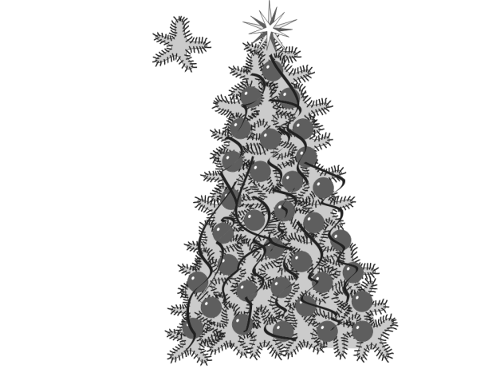

Самостоятельная работа
Создание изображения елки
1. Создайте новый документ и выполните его настройки.
2. Создайте эллипс и преобразуйте его в кривую командой Arrange Convert To Curves (Преобразовать в кривую).
3. Инструментом Shape (Форма) добавьте на кривую еще 6 узлов и измените форму объекта по образцу лапы елки. Выберите для заливки оттенок зеленого цвета.
4. Инструментом Freehand (Свободная форма \ Рисование) нарисуйте иголки. Выберите толщину иголок и цвет, отличный от предыдущего. Сгруппируйте кривую и иголки. Получится отдельная елочная “лапа”.
5. Создавая дубликаты, поворачивая, масштабируя и скашивая лапу с иголками, составьте елку.
6. Инструментом Polygon (Многоугольник) создайте пятиугольник.
7. НЕ преобразовывая его в кривую, инструментом Shape (Форма) превратите пятиугольник в звезду.
8. Поворачивая и копируя звезду, применяя Shape (Форма) к копиям, нарисуйте многолучевую звезду из нескольких объектов. Разместите её на вершине елки.
9. Для ликвидации просветов создайте на заднем плане произвольный многоугольник
10. Прикройте кругами наиболее слабые места елки.
11. Инструментом Freehand создайте несколько линий толщиной 2 мм или 6 pt (пунктов). Превратите их в линии переменной толщины, применив к ним средства предоставляемые полем Calligraphy (Каллиграфическое \ Каллиграфия) диалогового окна Outline Pen (Перо для контура \ абриса).
12. Выделите и сгруппируйте все объекты составляющие елку. Уменьшите размер елки примерно в пять раз. Несмотря на уменьшение габаритных размеров, толщины контуров останутся неизменными. Отмените уменьшение елки. Выделите группу объектов, составляющих елку. Вызовите окно Outline Pen (Перо для контура \ абриса). Поставьте флажок Scale with image (Сохранять пропорции \ Масштабировать вместе с изображением), другие параметры не меняйте. Нажмите ОК. Опять уменьшите размер елки примерно в пять раз. Теперь толщины контуров изменятся пропорционально изменению размеров объектов.
